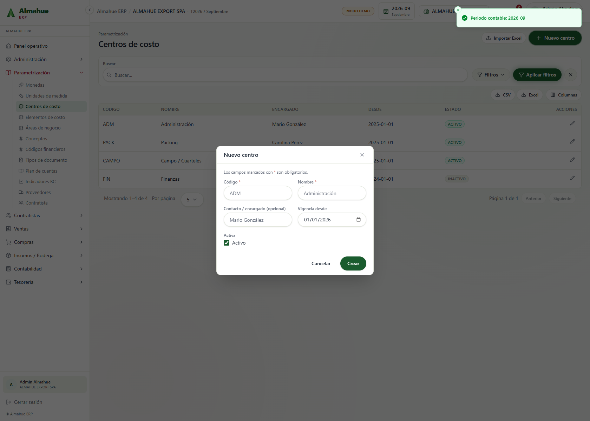
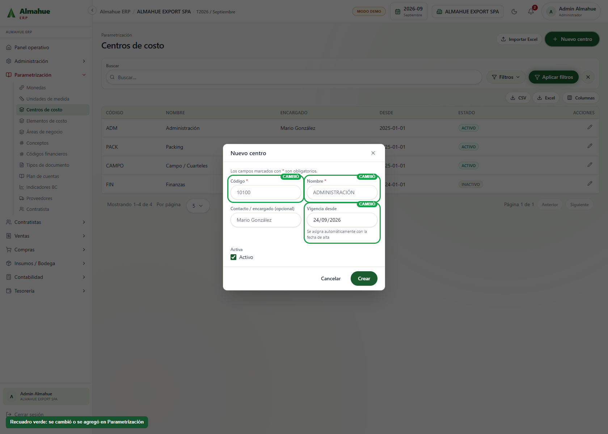
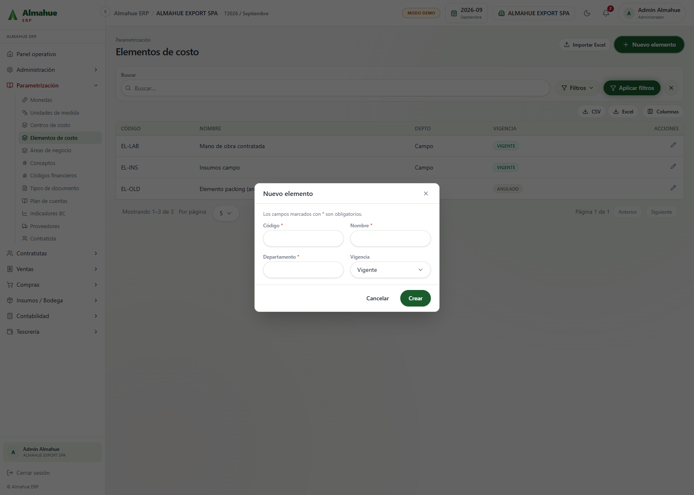
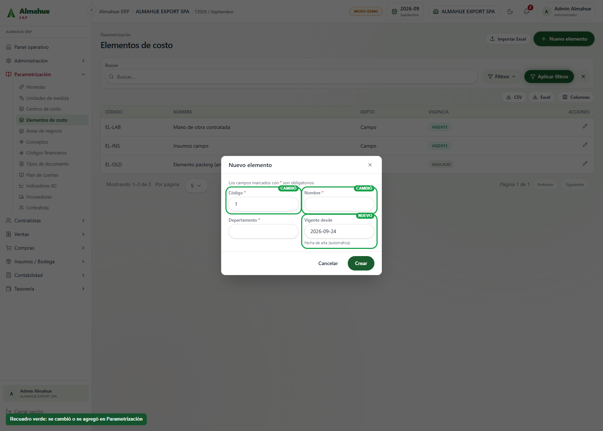
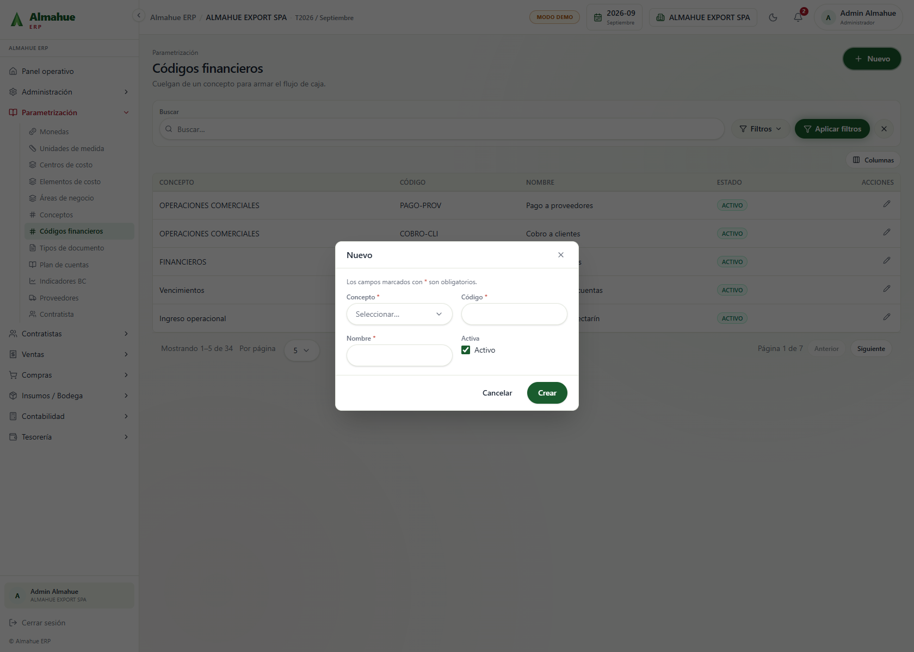
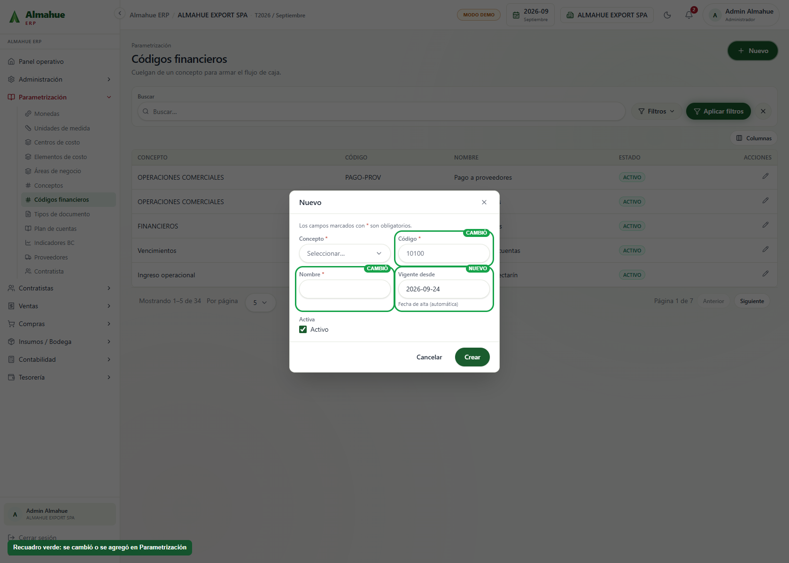
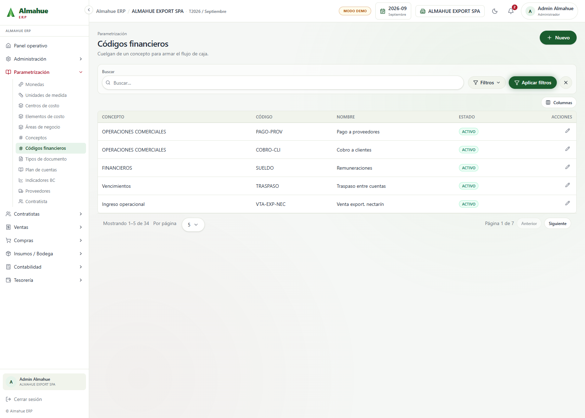
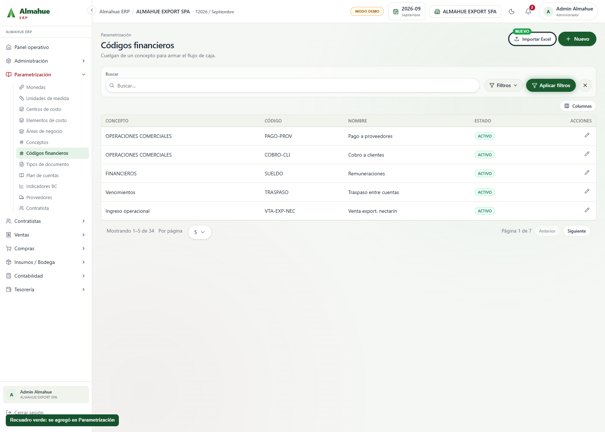
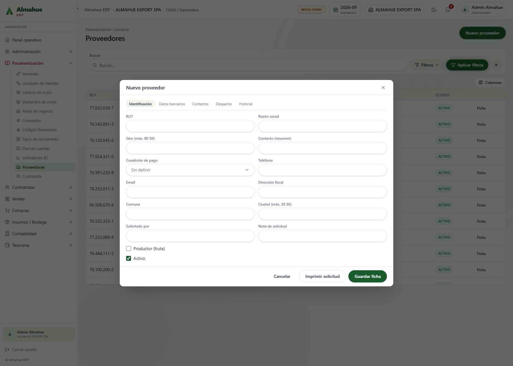
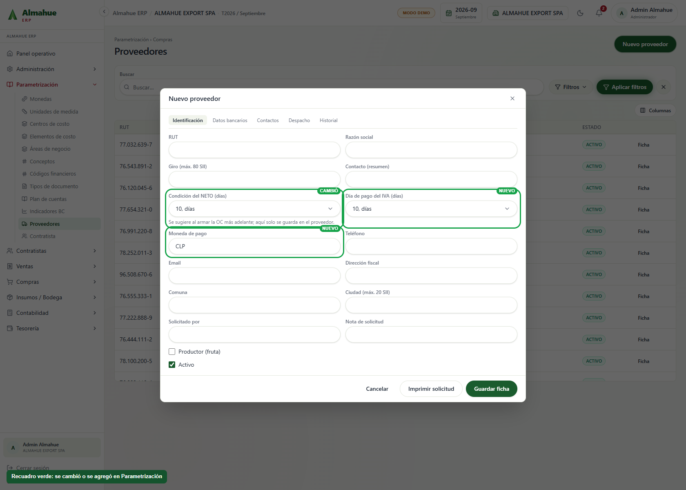

24/09/2026. Cada fila es la misma pantalla: a la izquierda como estaba, a la derecha con el recuadro verde en lo que cambió o se agregó. El recuadro es solo de la captura, no está en el sistema. Un clic abre la imagen: rueda o +/− hacen zoom, las flechas izquierda y derecha cambian entre el antes y el después, Esc cierra.
Las tarjetas de Trello de parametrización (Mario, 17/09, lista En QA Devint) quedan cubiertas acá: centros, elementos, códigos financieros y la carga de maestros contabilidad, cada uno con su plantilla de una sola hoja. El resto de esa lista (login, empresas, usuarios, plantilla, flujo de caja, compras) no entra en este módulo.


Tarjeta Centros de costo: código numérico, nombre en mayúsculas, vigencia desde la fecha de alta (solo lectura) y el código no se cambia al editar. Plantilla y Exportar usan un Excel de una sola hoja llamada «Centros de costo» (Código, Nombre, Contacto, Activa). La vigencia desde es la fecha de la carga y no va en el archivo. El libro de Mario, con varias pestañas, no se acepta.


Tarjeta Elementos de costo: las mismas reglas que centros, más el siguiente número libre (en el demo sale 1, porque los códigos actuales no son numéricos). Plantilla y Exportar usan una sola hoja «Elementos de costo» (Código, Nombre, Departamento). La vigencia es la fecha de la carga y no va en el archivo. Si el archivo no trae departamento, las filas nuevas quedan en GENERAL.


Tarjeta Códigos financieros («idem centro costos y elementos de costo»): código numérico, nombre en mayúsculas, vigencia automática y código fijo al editar. El correlativo sugerido quedó solo en elementos, porque en esta tarjeta Mario no lo pidió aparte.


Plantilla y Exportar usan una sola hoja «Codigos financieros» (Código, Nombre, Activa). Esa hoja no trae concepto: el alta manual sigue pidiéndolo, y la carga deja el concepto vacío en los códigos nuevos y no lo borra si el código ya existía.


Neto e IVA usan la misma lista: 10, 20, 30 y así hasta 90, y también se pueden escribir los días a mano. El IVA quedó en días, ya no como día del mes siguiente. La moneda de pago parte en CLP. Esto viene de la reunión del 24/09, no de una tarjeta de Trello.
Tarjeta Maestros contabilidad. Cada mantenedor descarga su plantilla (un Excel de una sola hoja) y se sube ese mismo archivo. El libro de Mario, con varias pestañas, se rechaza. Exportar baja lo que ya está cargado en esa plantilla, para editarlo y volver a subirlo: el código que coincida se actualiza y no se borran los que falten en el archivo.
ccos / nomCcos) para copiar a la plantilla.codElementoCosto / nomElementoCosto).codFinanciero / nomFinanciero).CUENTACONTABLE, Nombre, NIVEL, PLANTA, CC, A.NEG, ESPECIE, VARIEDAD, EC, AUXI, DES, REF, FECHA.VEN, CODFINAN). El nivel 1 a 4 es el grupo (cuenta padre) y el nivel 5 es la cuenta hoja. La hoja «Cuentas contables» del maestro de Mario no se usa: solo trae la cuenta final y deja las filas sin padre.La orden de compra sigue con 30/60/90 y no hereda los días ni la moneda de pago del proveedor. Tesorería no agenda el IVA con estos días. Esos dos quedan avisados y no se tocaron.